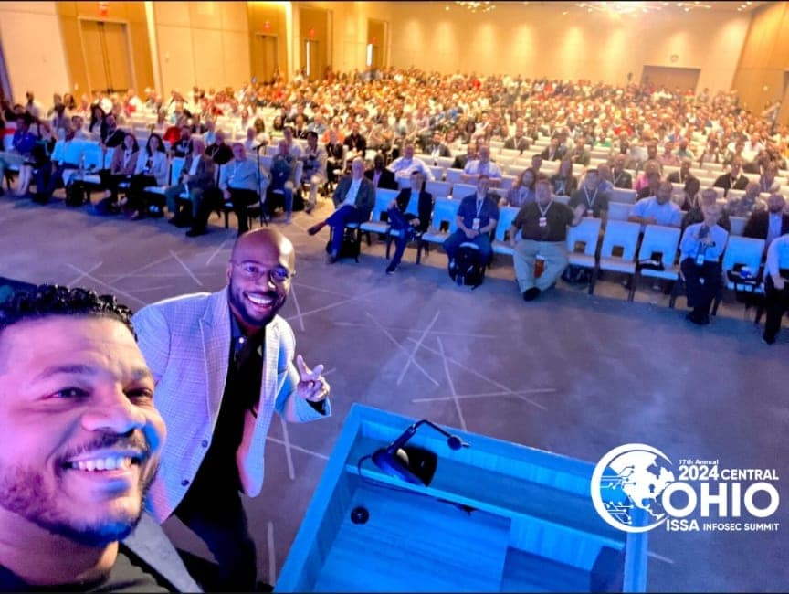
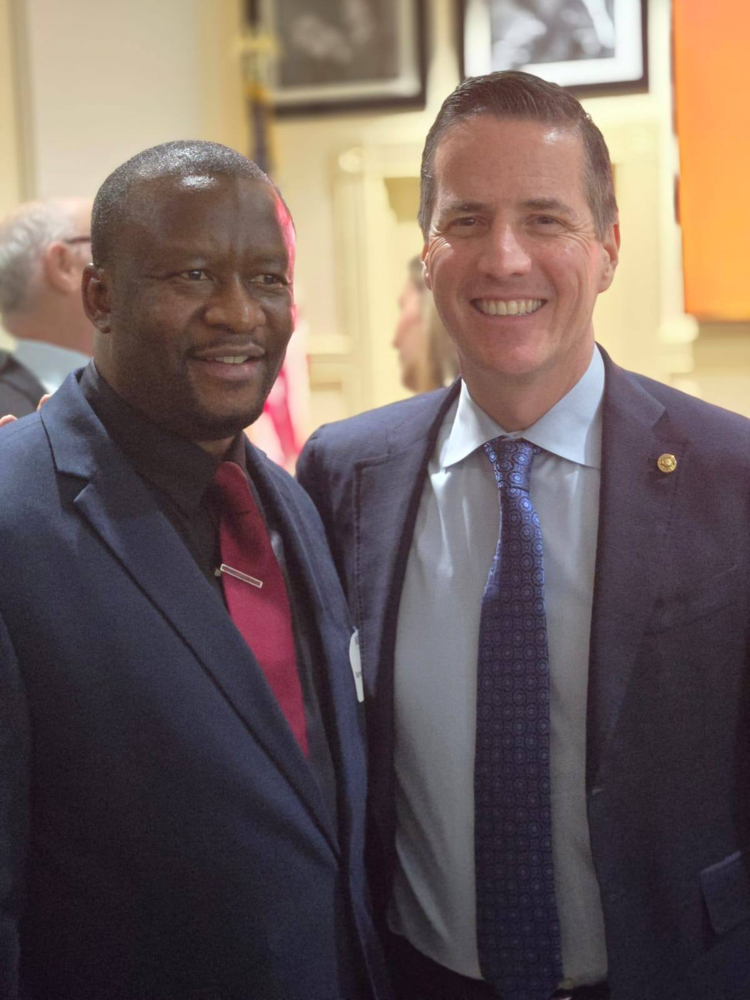
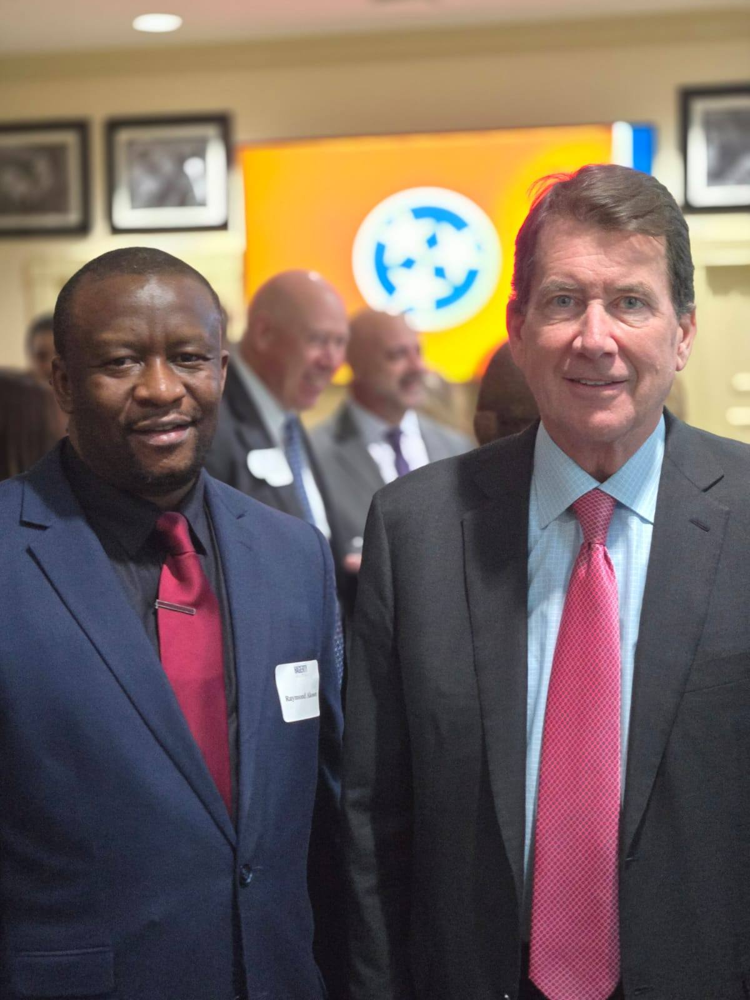
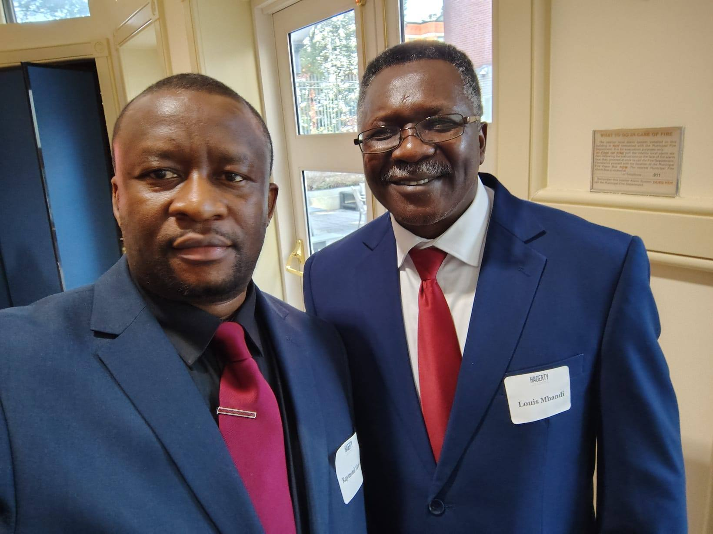

Media & Press
Resources for journalists, podcast hosts, event organizers, and media professionals. Official bios, speaking topics, quotes, and direct contact for media inquiries.
Ready-to-Use Bios
Use the appropriate biography for your publication format. All bios are pre-approved for media use.
Short Bio (50 words)
For program guides & social mediaAkotarh Akoson is a Senior Cybersecurity Analyst at a U.S. Fortune 500 company, founder of America CyberSquad, Scholarstika, and Mandem, and former Secretary General of the People Action Party of Cameroon. He is also an active Ambazonia human-rights advocate and civic-tech leader.
Medium Bio (100 words)
For event programs & articlesAkotarh Akoson is a Senior Cybersecurity Analyst with a U.S. Fortune 500 company, with additional experience supporting U.S. Federal Government security contracts. He holds a BSc in Cybersecurity (Magna Cum Laude) from Bellevue University. Akotarh is the founder of three technology ventures: America CyberSquad (cybersecurity services), Scholarstika (education management platform), and Mandem (church management platform). A former Secretary General of the People Action Party of Cameroon and parliamentary candidate, he remains an active Ambazonia advocate and human-rights documentarian, and is a leading voice on the intersection of cybersecurity, digital equity, and civic freedom.
Long Bio (200 words)
For keynote programs & media profilesAkotarh Akoson — formerly known publicly as Raymond Akoson — is a Senior Cybersecurity Analyst, civic-tech leader, entrepreneur, and human-rights advocate whose career spans two continents and three distinct professional domains: technology, politics, and social justice. Born in the Manyu Division of English Cameroon (Ambazonia), he built his early career in Cameroonian political life, serving as National Secretary for Organization and later Secretary General of the People Action Party. He also ran for Parliament representing the Manyu Constituency. After relocation to the United States, he earned a Bachelor of Science in Cybersecurity — Magna Cum Laude — from Bellevue University, and has since built a distinguished technical career, currently serving as a Senior Cybersecurity Analyst at a U.S. Fortune 500 company with prior Federal Government contract experience. He is the founder of three technology companies: America CyberSquad (cybersecurity and IT services for underserved organizations), Scholarstika (education management platform), and Mandem (church management platform). Akotarh remains a vocal advocate for the Ambazonian people and the rights of English-speaking Cameroonians, and speaks widely on the intersection of digital security, institutional trust, and civic freedom. He is available for media interviews, keynote engagements, and panel discussions.
Where Akotarh Speaks Best
Cybersecurity for Non-Technical Audiences
Making enterprise security concepts accessible to business leaders, board members, and civic organizations. Why it matters and what to do about it.
Digital Security as a Human Rights Issue
The lived experience of how surveillance, data exploitation, and digital exclusion harm real communities — and what the security industry must do about it.
The Ambazonian Crisis & Digital Advocacy
First-hand account of the Anglophone Cameroon conflict, the role of diaspora advocacy, and how digital tools are being used on both sides of the struggle.
Building Tech for Underserved Communities
The case for community-first technology entrepreneurship — and practical lessons from founding three ventures aimed at organizations that mainstream tech has left behind.
Technology & Democratic Accountability
How civic institutions can use technology to increase transparency, engage constituents, and resist the digital threats that undermine democratic participation.
From Politician to Engineer: Cross-Domain Leadership
What political leadership teaches technical professionals, and vice versa — and why the most important security problems require both technical and civic thinking.
On Record Statements
"Broken systems — whether digital or governmental — cause the same kind of harm to the same kind of people. That is why I work in both."On the connection between cybersecurity and civic justice
"The organizations that need security the most are the ones that can least afford to fail at it. That's why I built America CyberSquad."On founding America CyberSquad
"Displacement does not extinguish civic obligation. In many cases, it sharpens it."On continuing advocacy after leaving Cameroon
"You cannot protect what you cannot see. That principle applies equally to networks and to communities."On security visibility and civic transparency
In the Field
Highlights from leadership events, civic engagements, and professional networking.

ISSA InfoSec Summit 2024
Central Ohio — Cybersecurity conference and professional development

Political Networking
Engaging with U.S. political leaders
Ronald Reagan Republican Center
Civic leadership engagement in Washington

U.S. Political Engagement
Building cross-sector civic partnerships

PAP Campaign Rally — Manyu, Cameroon
Addressing the public during the People Action Party parliamentary campaign

Professional Networking
Industry events and partnerships

Leadership Conference
Advocacy and community engagement

Community Partners
Collaborative leadership in action
PAP Parliamentary Campaign
Official election poster — Mamfe Central & Upper Bayang constituency